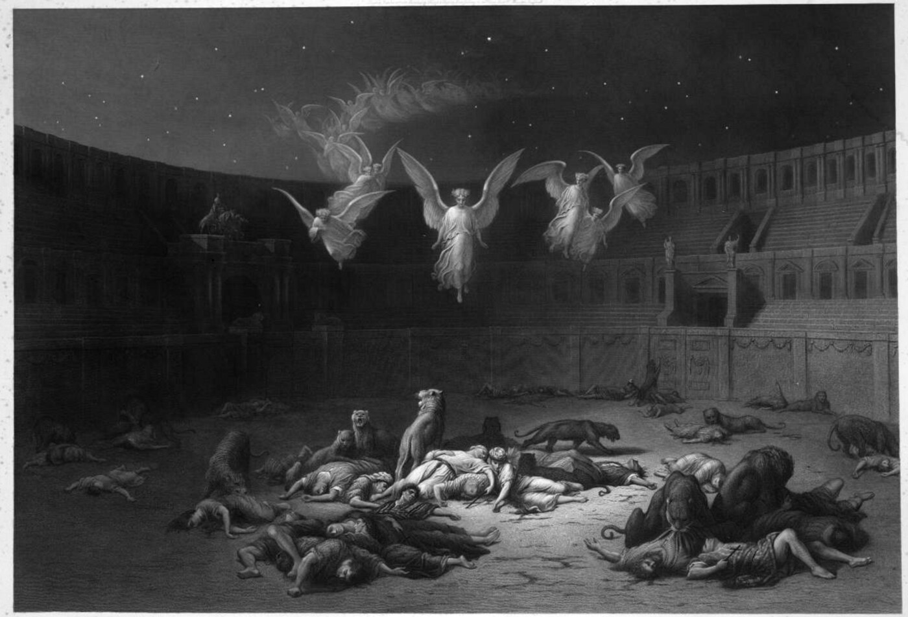
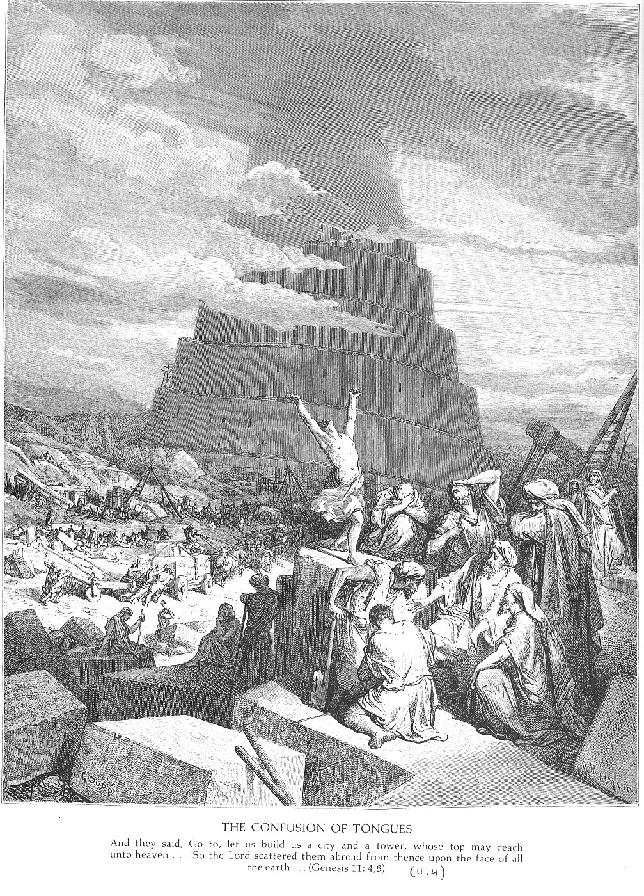
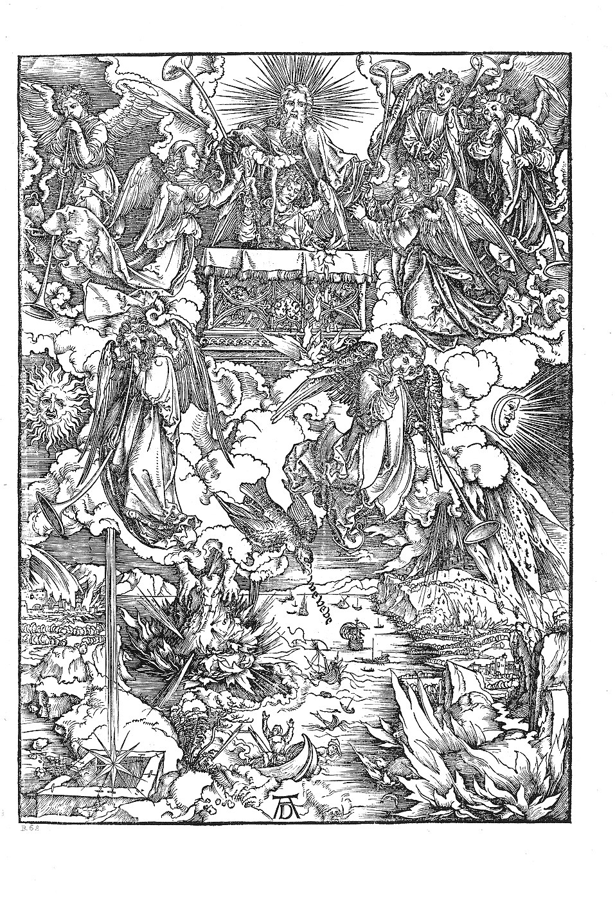

Ministry of Ecological Harmony · Sanctuary De Warren
Plate I · The Guardian Stag Casts Down the Dragon of Idleness
The Codex of Labour & Play
Facilitator Sheets · The Book of Games
“Every task earns credit. Every silence hides a runner. Every game is a sacrament, and every sacrament is a debt repaid.”
For Ministers, Wardens, Hosts & Facilitators only Sanctuary De Warren · 28 November 2026 · Year Zero
Book the First
The Facilitator Codex
Operating sheets for those who keep the machine running
Plate II · The Tables of the Operating Law
The Facilitator's Oath
Safety first · read before the doors open
Facilitators are the guardians of immersion and of safety. The regime is fiction; the people are real. If any player shows discomfort, the roleplay stops for them immediately and you step out of character without fuss.
Saying OZONE halts all gameplay, roleplay and performance around that person at once and brings organiser support, without question or penalty. Every host learns this before their first shift.
Quiet Haven: the second-floor quiet room is strictly out of character.
De-escalation: drop the bureaucratic tone; offer water, tea, a seat.
No touching in interrogations, riot drills or arena games unless the game says so and both people agree.
Fictional sins only: never ask about health, relationships, money, religion or anything a guest wouldn't say in public.
Always an easy route: every intake game has the Soft Interrogation as an alternative, no explanation needed.
Minister Operating Sheet
Clipboard rules & economic governance
Starting Treasury: Each ministry begins with +800 Carbon Credits.
Recruiting Citizens: Stamp the passport with the official Ministry Seal. Log starting debt (−150 to −500 CC) on the clipboard ledger.
Concession Operation: Assign recruits to station shifts (+30 CC) and guard against sabotage runs.
Dual-Tally Logging: Stamp the recruit's passport AND record the gain on the ministry ledger.
Corporate Agendas: Pool credits to enact decrees on the Central Board (200 CC to enact).
Ministry clipboards are audited periodically by Minilove.
The Ten Economic Powers
Asymmetric minister superpowers
Ministry
Power
Effect
Miniservice
Debt Relief
50% state debt relief: absorbing −400 debt burdens the ledger by only −200. Rapid dishwashing shifts.
Minirenewal
Bounty
+100 CC state bounty whenever a bankrupt citizen is composted through the Suicide Carbon Booth.
Minilight
Grid Monopoly
May plunge zones into darkness unless paid a 30–50 CC Grid Maintenance Tariff.
Miniflow
Fluid Dividends
+20 CC every time a citizen returns moisture at Peetopia; fines unauthorised cup spills.
Miniplenty
Indulgences
Controls the snack table. Sells caloric dispensations for direct credit transfers.
Minilove
Fine Seizure
Carries citation pads. Keeps 50% of all fines levied on heretics.
Minijoy
Morale Grants
Charges +10 CC entry for wig duels; +150 grant for crowd rallies of 15+ guests.
Minishelter
Transit Tolls
Guards corridor bottlenecks; charges 10–20 CC for cross-sector transit passes.
Minithrift
Liquidation
Confiscates non-organic items; liquidates contraband for +40 CC each.
Minibreath
Offsets
Meters exhalations; sells Breath Indulgences to dancers and runners.
Station Sheet I · The Suicide Carbon Booth
Minirenewal upcycling ritual
Location
Phone booth / Upcycling Portal
Host
Renewal Technologist (lab coat)
Citizen enters with heavy debt (−350 CC or worse).
Review: “Are you prepared to surrender your old self?”
Oath: “I compost my ego; I return my nitrogen.”
Strike out the surname with black marker; stamp the giant “CLEANSED TO HUMUS” seal.
Reset debt to 0 CC; assign a new name (e.g. Citizen Lichen-88). Minirenewal logs the +100 bounty.
Station Sheet II · How the World Ends
Minijoy extinction open-mic
Location
Mini-podium stage
Host
The Morale Officer (megaphone)
Rounds
22:00 · 22:45 · 23:15 (up to 4 contestants)
Rules
60 seconds to deliver the most melodramatic, operatic extinction monologue.
Judging
Synchronised audience applause.
Reward
+100 CC & the Order of Cathartic Hysteria ribbon. Minijoy logs the crowd subsidy.
Station Sheet III · The Wig Snatching Arena
Minijoy
Two duellists in neon wigs. Hands start on knees. On the bell, snatch your opponent's wig without touching their body. Best of 3, 60 seconds. Winner receives a +25 CC stamp.
Station Sheet IV · Greenwashing Dishes
Miniservice
Five-minute shift. One recycled sponge, a strictly metered spray bottle (“Account for every drop”). Cleaning 10 glasses earns a +30 CC stamp.
The Ten Seeded Moles
Discreet missions slipped into 10 passports
#
Cover
Mission
Reward
01
Miniflow
Whisper to Citizen Jasper at the water cooler: “The Rhine does not belong to the algorithm.”
Slip to Thijs's room
02
Miniplenty
Deliver 3 algae paste cups to the coat check: “These calories cannot sustain a soul.”
+30 CC & “Seek the red door”
03
Minilight
Pedal the bike backward for 2 minutes humming a pre-collapse melody.
Match packet with room code
04
Minilove
Find the hollow copy of Silent Spring on the 3rd shelf in the library.
Secret knock: 3 slow, 2 fast
05
Minirenewal
Tell the recycling operator: “I am Citizen Unaccounted.”
Resistance ankle stamp
06
Minibreath
Exhale into the corridor sensor for 10 s reciting: “The forest does not ask for credits.”
Cellar cable hatch access
07
Minishelter
Bribe the checkpoint guard with a synthetic trinket.
Corridor pass to Thijs's sector
08
Miniservice
Hide a clean saucer under a towel during the wash shift; carry it to the tea station.
Duplicate ankle stamp
09
Minithrift
Retrieve the USB drive labelled CELLAR_AI_BACKUP_NODE from the locker.
Induction into strike cadre
10
Minijoy
End your open-mic speech: “Joy without truth is just an electric fence.”
Resistance makes contact
The Rebel Runs
Netrunner infiltration missions from Thijs's room
Run 01 · Grid Short-Circuit Target: Minilight dynamo · Ice: 2 recruits & warden Action: Attach an ungrounded wire clip to the terminal during a distraction. Breach: Trash 100 CC from an active decree
Run 02 · Flow Meter Inversion Target: Miniflow Peetopia · Ice: Restroom auditor Action: Invert the moisture dial without being observed. Breach: Truth Fragment #1 (water telemetry)
Run 03 · Heresy Registry Purge Target: Minilove holding pen · Ice: Cameras & officers Action: Swap the citation sheet with an ink-stained decoy. Breach: Trash 100 CC from an active decree
Run 04 · Composting Vault Extraction Target: Minirenewal booth · Ice: Lab technologists Action: Retrieve folder HUMUS_DELETIONS_2080 from beneath the compost vat. Breach: Truth Fragment #2 (AI parameter feeding)
Run 05 · Contraband Vault Heist Target: Minithrift locker · Ice: Contraband guard Action: Pick the latch during a staged scuffle; take the fibre cable. Breach: Truth Fragment #3 (fibre line to the cellar)
Climax key: the three truth fragments prove the Guardian Stag is an AI server in the cellar.
Nostalgia Sting: Catch 2 Minijoy members discussing pre-collapse holidays.
+40
Minijoy
Smiling Scullery: Make the Miniservice dish squad sing the smiling song.
+35
Minirenewal
Reclaim the Confiscated: Steal 3 items from Minithrift to compost in the vat.
+45
Minilight
Blackout Guide: Kill the lights in Minishelter; guide everyone out with glowsticks.
+30
Miniflow
Moisture Seizure: Confiscate high-water vegetables from the Miniplenty table.
+35
Minibreath
Hyperventilation Fine: Cite 3 citizens pedalling the stationary bike.
+25
Minishelter
Curfew Trap: Trap a Minilove warden inside the phone booth for 3 minutes.
+50
Miniservice
Perpetual Mop: Mop the booth exit, forcing recycled citizens to remove boots.
+25
Minithrift
Tabard Audit: Seize non-organic lanyards from Minibreath officers.
+30
The Revolution · Run of Show
23:30 Assembly → 00:15 Dance
CUE 01 · 23:30 · Grand Assembly Audio: low sub-bass drone and bells. Hanna (PA): “Citizens of R.E.I.G.N. The hour of accounting has arrived. By decree of the Guardian Stag, all ministries assemble at the podium. Bring your passports. Bring your devotion. Prepare to be weighed.”
CUE 02 · 23:45 · Resistance Raid Visual: red alarm strobes; audio stutters. Action: ankle-stamped rebels blow whistles and drop black banners: “THE STAG IS SILICON. THE DEBT IS A LIE.” Thijs at the mic: “There is no Guardian Stag! Look at the cellar! An AI server is running in the basement!”
CUE 03 · 00:05 · Liberation Ritual Everyone tears out Page 7 of their passport (the Ancestral Debt Bond) and throws it as confetti. Performers drop character, embrace participants and rejoice.
00:15 · Beat Drop The siren fades into the DJ's opening bassline. The venue becomes an open dance floor until 04:00+. Confetti is cleaned up together at 04:00.
Book the Second
The Book of Games
44 suggestions · more than we need · tick ☐ PICK on the ones we run
Plate III · The Leviathan of Leisure
How to use this book: each game has a ministry, a host, props and a reward. Tick the ones we choose,
write the owner in the Notes line, and re-run scripts/build_games_codex.py after editing.
The Interrogation
Minilove intake for those who did not apply for citizenship · Lead: Eric

Plate · The Tribunal of the Unregistered
Guests without an application are pulled from the garage queue into a small, dim room: one chair, one lamp, two officers. Every interrogation ends the same way — with a debt stamped in the passport and a ministry assignment — but the route there can be chosen per guest and per mood. Keep each session under four minutes so the queue keeps moving.
1
Good Cop / Bad Cop Carbon Audit
☐ PICK
Minilove1 guest · 3–4 minIntensity: Medium
Host
2 Interrogation Officers
Where
Garage interrogation room
Props
Desk lamp, single chair, clipboard, Audit Card with 5 questions, debt stamp
Bad Cop reads the Audit Card: flights taken, meat eaten, age of phone, length of shower, number of chargers owned.
Every honest answer adds debt (+50 CC per sin); every evasive answer adds double.
Good Cop slides over a cup of algae water and offers a 100 CC 'discount' for a sincere apology to the biosphere.
Total is stamped into the passport (−150 to −500 CC) and a ministry is assigned.
Reward · Debt set at −150 to −500 CC
Guests who apologise to the lamp instead of the officers get a 'Sincerity Discount' of 50 CC.
Notes:
2
The Prisoner's Ledger
☐ PICK
Minilove2 guests · 3 minIntensity: Medium
Host
2 Officers in separate booths
Where
Two booths or two corners of the garage
Props
Two chairs back-to-back behind a curtain, 2 verdict cards, egg timer
Two arriving guests are separated and each told the other has 'already confessed'.
Each secretly chooses SILENCE or DENOUNCE on a verdict card.
Both silent: −150 each. One denounces: denouncer −100, the other −400. Both denounce: −300 each.
Reveal the cards together; read the outcome aloud like a court verdict.
Reward · Debt per outcome table
A classic prisoner's dilemma: the room learns who trusts whom before the party even starts.
'Lie detector' (lamp + paper windmill + cables), hidden buzzer or bell
Guest holds the windmill to their lips; every answer must be breathed onto it.
Officer asks 6 yes/no questions ('Have you ever left a tap running?').
The hidden operator buzzes at random. Each buzz = 'LIE DETECTED', +40 CC debt.
Guest may retract any answer by confessing a bigger sin instead.
Reward · Debt +40 CC per buzz
The machine is obviously rigged — and the officer insists it is the most objective instrument in Ecotopia.
Notes:
4
The 24-Hour Carbon Receipt
☐ PICK
Minilove1 guest · 3 minIntensity: Low
Host
1 Auditor with calculator
Where
Intake desk
Props
Receipt pad, absurd Carbon Price List (A5), adding machine or calculator
Guest reconstructs the last 24 hours out loud: travel, meals, screens, showers.
Auditor prices every item from the Carbon Price List ('one selfie: 12 CC').
Guest must total the receipt themselves within 60 seconds.
Arithmetic errors are fined as 'ledger fraud' (+50 CC).
Reward · Debt = receipt total
Hand the receipt over as a souvenir; it doubles as proof of debt at other stations.
Notes:
5
State Tongue Drill
☐ PICK
Minilove1 guest · 2 minIntensity: Low
Host
1 Officer with flash cards
Where
Interrogation room
Props
10 flash cards from the Doublethink Lexicon (old word → state word)
Officer shows an old-world word ('holiday', 'freedom', 'steak').
Guest must answer with the State Tongue equivalent within 5 seconds.
Each old-world word spoken = +20 CC debt; each correct answer = −10 CC.
Ten cards, then the passport is stamped.
Reward · Debt ±10/20 CC per card
Teaches the vocabulary the rest of the night runs on.
Notes:
6
The Ancestral Multiplier
☐ PICK
Minilove1 guest · 3 minIntensity: Low
Host
1 Genealogist Officer
Where
Interrogation room
Props
Family-tree form, one large die, ink pad
Guest names three ancestors and one bad habit each (a car, a cruise, a barbecue).
Each habit gets a base debt of 50 CC.
Guest rolls the Ancestral Multiplier die: the total is multiplied by the roll (cap at −500).
Thumbprint the family tree; it is filed 'for eternity'.
Reward · Debt 50–500 CC
Inherited Biological Sin made literal: you are fined for your grandmother's caravan.
Notes:
7
Denounce a Neighbour
☐ PICK
Minilove1 guest · 1–2 minIntensity: Medium
Host
1 Officer
Where
Intake desk
Props
Pre-printed Denunciation Slips, box with slot
Officer offers 100 CC off the guest's debt for naming another guest who 'looks unsustainable'.
The guest writes a description (never a real name) on a Denunciation Slip.
Slips go in the box; Minilove patrols draw slips during the night and audit whoever matches.
Guests who refuse to denounce get a small 'Integrity' sticker — which the resistance looks for.
Reward · −100 CC debt for denouncing
The refusers become the easiest recruits for Thijs's resistance later.
Notes:
8
The Soft Interrogation (opt-out route)
☐ PICK
Minilove1 guest · 1 minIntensity: Low
Host
1 Friendly Clerk
Where
Side desk, lights up
Props
Simple form, pen, debt stamp
For guests who look uncomfortable or say they'd rather not: no officers, no lamp.
A friendly clerk asks three light questions and apologises for the bureaucracy.
Standard debt of −250 CC is stamped; passport handed over with a smile.
Guest continues to the ministry desk like everyone else.
Reward · Debt −250 CC
Always available. Nobody needs to explain why they chose it.
Notes:
The Inburgering
The Civic Integration Programme for new citizens · Lead: Inge & Lexi

Plate · The Confusion of Tongues · The Integration Exam
Every new citizen must integrate. Modelled on the Dutch inburgering: an exam, a participation declaration, a knowledge-of-society test and a ceremony — all in Ecotopian form. These games work at intake, at a fixed Integration Desk during the night, or as a scheduled ceremony on the hour.
The auditor offers a 'Flush Permit' as guests head to the restroom.
Returning moisture to the collective earns a stamp on the way out.
Guests who skip the auditor are written up (just a joke citation).
Never block the restroom or delay anyone in a hurry.
Reward · +20 CC per return
Keeps the existing Peetopia idea light and fast.
Notes:
24
Greenwashing: The Rebranding Desk
☐ PICK
Miniservice1–2 guests · 2 minIntensity: Low
Host
1 Brand Steward
Where
Scullery table
Props
Empty product packaging, green markers, leaf stickers
Guest picks a 'sinful' product package (crisps, a shampoo bottle, a phone box).
In 90 seconds they must greenwash it: new name, leaf stickers, a slogan.
The steward hangs the best ones on the Wall of Purified Products.
Pairs with the existing Greenwashing Dishes shift.
Reward · +20 CC, +40 CC if hung on the wall
The wall becomes a funny art piece by midnight.
Notes:
Stage & Crowd
Scheduled moments for the main stage, the PA and the whole room

Plate · The Seven Trumpets of Morale
Big moments to pull the room together between the station games. One every 30–45 minutes is plenty.
25
The Ecotopia Anthem & State Dance
☐ PICK
MinijoyEveryone · 4 minIntensity: Low
Host
Morale Officer + DJ
Where
Dance floor
Props
Anthem track, gesture poster, megaphone
At 22:00 and 23:30 the DJ fades into the anthem.
The Morale Officer leads the State Gestures from the stage.
Ministers 'spot-check' devotion and hand out +10 CC to the most sincere dancers.
Ends with the whole room shouting 'Born into debt! Repaid in devotion!'
Reward · +10 CC spot rewards
Learned during the Inburgering, performed by everyone later.
Notes:
26
The Ministry Rally
☐ PICK
All ministries3–5 ministries · 15 minIntensity: Low
Host
High Warden as judge
Where
Main stage
Props
Prompt cards, cardboard banners, markers, applause meter (or a judge with a sign)
Each competing ministry gets 10 minutes to prepare a 60-second rally speech and chant.
Prompts: 'Why your ministry deserves more power', 'Why the rival ministry is a fire hazard'.
Each ministry performs; the crowd is the applause meter.
Winner receives a treasury grant and may fund a decree.
Reward · +150 CC treasury grant
Drives the Central Decree Board and gives ministries a reason to recruit loud citizens.
Notes:
27
The Sustainability Pageant
☐ PICK
Minijoy5–6 contestants · 15 minIntensity: Low
Host
2 hosts + 3 judges
Where
Main stage
Props
Sash for the winner, judges' scorecards, a runway (taped line)
Round 1, Lowest-Footprint Outfit: walk the runway explaining what your outfit gave up.
Round 2, Talent: 30 seconds of a sustainable talent (silent gratitude, composting mime…).
Round 3, Q&A: 'How would you end the world as sustainably as possible?'
Judges score; winner crowned Citizen of the Ledger.
Reward · +100 CC + sash
Ideal for guests who came in full costume.
Notes:
28
ABC: The Sustainability Gameshow
☐ PICK
Minijoy × Minilove4 teams of 3 · 15 minIntensity: Low
Host
Quizmaster in Hanna voice
Where
Stage or side room
Props
Buzzers or bells, question cards, scoreboard
Rounds: Carbon Prices, Doublethink, Pre-Collapse History (all wrong on purpose), Name That Ministry.
Teams buzz in; correct answers per the State, not reality.
Joker: once per game a team may 'Denounce' another team to steal their points.
Winning team splits the prize.
Reward · +60 CC per winning team member
A pub quiz where reality loses points.
Notes:
29
How the World Ends (Open-Mic)
☐ PICK
MinijoyUp to 4 contestants · 10 minIntensity: Low
Host
Morale Officer
Where
Mini-podium
Props
Megaphone, banners, ribbon
Existing game: 60 seconds for the most melodramatic extinction monologue.
Rounds at 22:00, 22:45, 23:15.
Crowd applause picks the winner.
Winner receives the Order of Cathartic Hysteria.
Reward · +100 CC + ribbon
Already in the run sheet; listed here for completeness.
Notes:
30
Hanna Says (PA Broadcast Game)
☐ PICK
MiniloveEveryone · 1 min, several times a nightIntensity: Low
Host
Hanna on the PA + floor wardens
Where
Whole venue
Props
PA, scripted broadcasts
Hanna's hourly bulletins include commands: 'Citizens will now hold their breath in gratitude.'
Commands that start with 'By decree' must be obeyed; others must be ignored.
Wardens fine the slowest or the wrong ones 10 CC (playfully).
Mix in genuinely useful info (bar times, schedule) the same way.
Reward · Fines 10 CC
Simon Says with a posh voice and horrific news in between.
Notes:
31
The Riot Drill
☐ PICK
Minilove × MinishelterVolunteers · 5 minIntensity: Medium
Host
4 Officers with cardboard shields
Where
Dance floor edge, marked zone
Props
Cardboard shields, tape for the zone, whistle
A choreographed, no-contact drill: officers 'kettle' a taped zone that shrinks every 30 seconds.
Volunteers inside chant approved slogans and must stay in the zone.
Those squeezed out are 'processed' (a stamp) and become spectators.
Last citizen standing receives a Loyalty Medal.
Reward · +40 CC to the last citizen
Musical chairs as state theatre. Strict rule: no touching, volunteers only.
Notes:
32
The Wig Snatching Arena
☐ PICK
Minijoy2 duellists · 60 sIntensity: Low
Host
Arena Referee
Where
Clearing near the stage
Props
Neon wigs, bell, chalk circle
Existing game: snatch the opponent's wig without touching their body.
Best of 3, hands start on knees.
Entry +10 CC to Minijoy; winner +25 CC.
Good distraction for rebel runs nearby.
Reward · +25 CC
Already in the run sheet; listed for completeness.
Notes:
Gambling & the Debt Economy
Games that move carbon credits between citizens and ministries
Plate · And Debt Rode Behind Him
Gambling makes the economy feel alive and lets players climb out of debt quickly or sink further. Cap stakes at 50 CC so nobody is locked out of the night's game.
33
Carbon Roulette
☐ PICK
MinijoyUp to 6 · 2 min per spinIntensity: Low
Host
1 Croupier
Where
Casino table
Props
Spinner or roulette wheel with the 10 ministry names + a black 'STAG' field, chips
Players bet 10–50 CC on a ministry.
Winning ministry pays 5×; the STAG field takes all bets for the state.
The croupier announces each result as a state communiqué.
The winning ministry's treasury gets +10 CC every spin.
Reward · 5× stake
Ministries start sending members to cheer for their own field.
Notes:
34
Liar's Ledger
☐ PICK
Minilove3–6 · 10 minIntensity: Low
Host
Self-run (rules card)
Where
Any table
Props
5 dice and a cup per player
Liar's dice: players bid on how many dice across the table show a face ('four 3s').
Call 'AUDIT' to challenge the previous bid.
Loser of each audit pays 10 CC into the pot and loses a die.
Last player with dice wins the pot.
Reward · The pot
Bluffing as civic virtue.
Notes:
35
Debt Futures Auction
☐ PICK
MinithriftRoom · 10 min, once per hourIntensity: Medium
Host
1 Auctioneer
Where
Stage or bar
Props
Gavel, 'debt bonds' cards (volunteers only)
Volunteer citizens put a slice of their debt up for auction.
Others bid credits to 'buy' it; the buyer may assign the debtor one light task (fetch a drink, perform a gesture).
The auctioneer narrates each citizen's qualities like livestock at a fair.
Debt moves from seller to buyer on both passports.
Reward · Debt transfer
Only volunteers; tasks must stay light and consensual.
Notes:
36
The Carbon Confessional Price List
☐ PICK
Minilove1 guest · 90 sIntensity: Low
Host
1 Confessor
Where
Confession booth
Props
Price list of sins, curtain, small bell
Guest confesses a pre-collapse sin; the confessor looks it up on the price list.
Pay the price in credits to receive absolution (a stamp).
Confessing someone else's sin costs double.
Minilove keeps 50% of every absolution.
Reward · Absolution stamp
The committee's Carbon Confessions idea, made into a shop.
Notes:
37
Indulgence Certificates
☐ PICK
Miniplenty × MiniloveAny · 30 sIntensity: Low
Host
Pardoner with tray
Where
Roaming
Props
Pre-printed gothic certificates (e.g. 'Licence to shower 4 minutes')
The pardoner roams the venue selling indulgences.
Each certificate permits one sin for one night: a second drink, a phone check, a hug.
Wardens may demand to see the certificate.
Unlicensed sinners are fined 20 CC.
Reward · Costs 20–60 CC
Medieval indulgences meet carbon offsets.
Notes:
38
The Ministry Stock Exchange
☐ PICK
MinithriftRoom · all nightIntensity: Low
Host
1 Broker at a board
Where
Wall near the Decree Board
Props
Whiteboard with 10 ministry 'share prices', share slips
Citizens buy shares in ministries for 10 CC each.
Every 30 minutes the broker updates prices based on ministry treasuries and scandals.
Shares can be sold back at the current price.
Insider trading is a heresy (and therefore very popular).
Reward · Varies
Gives spectators a reason to follow the ministry rivalries.
Notes:
Resistance & the Machine
Games that seed the AI-server twist and feed the revolution at 23:30
Plate · Melencolia of the Machine
These games tie into the secret that the Guardian Stag is an AI running on human brains. They should feel slightly off: too precise, too eager, glitching.
39
Prove You Are Human
☐ PICK
Minilove (the Machine)1 guest · 2 minIntensity: Low
Host
1 Terminal Attendant
Where
Terminal by the cellar door
Props
Laptop or printed 'captcha' cards with absurd tests
Before entering a sector, guests must pass a captcha: 'Select all images containing gratitude'.
The attendant marks every answer as wrong at least once.
On the third try they pass and receive a sector stamp.
One captcha card in ten shows a cellar server rack — the attendant panics and takes it back.
Reward · Sector stamp
Plants the AI clue in plain sight.
Notes:
40
The Prompt Confessional
☐ PICK
Minilove (the Machine)1 guest · 2 minIntensity: Low
Host
Hidden typist
Where
Booth with screen
Props
Laptop showing a chat window, hidden operator on another laptop
Guests type a question or confession to 'the Guardian Stag'.
A hidden operator replies in an over-polite, slightly broken AI voice.
Every reply ends with a debt adjustment.
Occasionally the Stag 'leaks': 'Neural throughput insufficient. Please hydrate.'
Reward · ±10–30 CC
Answers the committee's 'Sustainable AI, how to do it?' line with the twist itself.
Notes:
41
The Whisper Chain
☐ PICK
Resistance (Thijs)5 guests · 20 minIntensity: Low
Host
Thijs's room
Where
Whole venue
Props
5 numbered cards, one secret phrase
A rebel whispers a phrase to the first link; each link must find the next by a visual sign (ankle stamp, red ribbon).
The last link reports the phrase back to Thijs.
If it arrives intact, the chain gets a truth fragment.
Minilove patrols may intercept a link: 'You seem to be whispering.'
Reward · Truth fragment
Telephone game meets underground cell structure.
Notes:
42
Truth Fragment Hunt
☐ PICK
ResistanceTeams of 2–4 · 45 minIntensity: Low
Host
Thijs + 2 rebels
Where
Whole venue (hidden slips)
Props
10 hidden slips with server logs, cable photos, power bills
Teams receive a cryptic map from Thijs's room.
Slips are hidden at ministry stations (under the compost bin, in the hollow book…).
Collect at least 5 fragments to unlock the cellar story.
Fragments are presented as evidence at 23:45.
Reward · Revolution evidence
Feeds directly into the 23:45 raid script.
Notes:
43
The Turing Tribunal
☐ PICK
MinijoyRoom · 10 minIntensity: Low
Host
Moderator + 3 'ministers'
Where
Stage
Props
3 chairs, script for one 'bot' minister
Three ministers answer questions from the crowd.
One of them only reads from a printed script (the 'bot').
The crowd votes on who is the machine.
If they guess right, every resistance member present earns a truth fragment.
Reward · Truth fragment / +20 CC
The audience practises spotting the machine before the reveal.